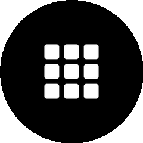

今 日 揭 秘
A I 的 设 计
2
种 同 款
同 款 字 体
×
同 款 渐 变
都 长 一 个 样
#01
JavaScript · A 普 通 可 用
pbakaus / impeccable

六 十 条 规 则 专 查 AI 审 美 惰 性 · 紫 蓝 渐 变 卡 片 套 卡 片 一 眼 挑 出
设 计 规 则 审 查
60
✗紫 蓝 渐 变 堆 叠
✗卡 片 套 卡 片 嵌 套
✓字 体 层 级 清 晰
治 AI 审 美
规 则 检 测
一 键 集 成
AI 审 美 惰 性 被 治 了
100m80m60m40m20m
#02
Python · C 开 发 者 向
shiyu-coder / Kronos

把 价 格 走 势 当 语 言 读 · 用 读 文 本 的 模 型 读 K 线 做 金 融 时 序 预 测
K 线 当 语 言 读
NLP → 金 融
跨 界 金 融
读 K 线
给 量 化
K 线 当 语 言 读 挺 新 奇
#03
Go · B 半 可 用
yorukot / superfile

命 令 行 里 做 出 精 致 图 形 化 · 键 盘 流 操 作 跨 平 台 文 件 管 理
$ spf
▸ src/ ▸ docs/ ▸ pkg/
终 端 美 学
键 盘 流
跨 平 台
命 令 行 也 能 这 么 好 看
#04
Python · A 普 通 可 用
andrewyng / aisuite

一 个 接 口 接 住 多 家 AI 服 务 商 · 桌 面 同 事 读 文 件 跑 任 务 数 据 留 本 地
一 个 接 口
→
多 家 AI
OpenAI
Claude
Gemini
DeepSeek
桌 面 同 事 · 数 据 留 本 地 不 上 云
统 一 接 口
桌 面 同 事
本 地 数 据
一 个 接 口 省 好 多 事
再 补 几 个 上 榜 的

block / buzz
Rust · 群 体 协 作 通 信
+1705 ★ 今 日
Pumpkin-MC / Pumpkin
Rust · 高 效 开 游 戏 服
+339 ★ 今 日

permissionlesstech / bitchat
Swift · 蓝 牙 断 网 群 聊
+1198 ★ 今 日
今 日 四 个 工 具
你 会 试 哪 个？
关 注 GitHub 星 探